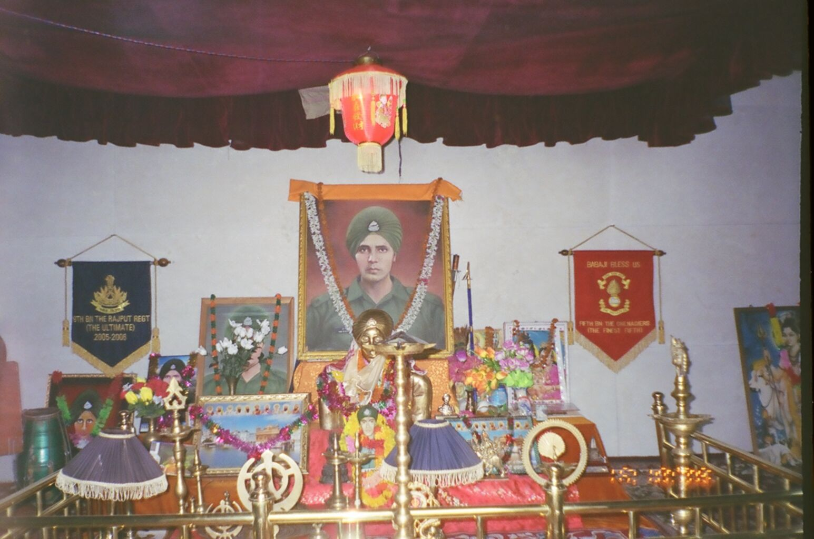

About
Baba Harbhajan Singh(1946–1968) was an Indian Army soldier who served from 30 June 1965 to 4 October 1968. He is said to serve the Indian Army even after his death by coming in dreams of soldiers and telling them the plans of their enemies. There is a temple dedicated to him in East Sikkim.
Memorable Moments
Mandir
Plaque

Life and military career
Harbhajan Singh was born into a Sikh family on 30 August 1946 in the village of Sadrana (now in Pakistan). He completed his preliminary education at a village school, and then matriculated from DAV High School in Patti, Punjab, in March 1965. He enlisted as a soldier in Amritsar and joined the Punjab Regiment (India).
Death
Singh was martyred in 1968 near the Nathu La (pass) in eastern Sikkim, India. A board besides his shrine describes that he was martyred after falling into a nullah while escorting a mule column from Tuku La to Dongchui La.
Harbhajan Singh's early death at the age of 22 is the subject of legend and religious veneration that has become popular among Indian Army regulars (jawans), the people of his village and apparently soldiers of the Chinese People's Liberation Army (PLA) across the border guarding the Indo-Chinese border between Sikkim and Tibet.
Legacy & Associated legend
He has come to be known as "Saint Baba".Every year on 11 September, a jeep departs with his personal belongings to the nearest railway station, New Jalpaiguri, from where it is then sent by train to the village of Kuka, in the Kapurthala district of the Indian state of Punjab.
While empty berths on any train of the Indian Railways are invariably allocated to any waitlisted passenger or on a first-come-first-served basis by the coach attendants, a special reservation for the Baba is made.
Every year a seat is left empty for the journey to his hometown and three soldiers accompany the Baba to his home. A small sum of money is contributed by soldiers posted in Nathula to be sent to his mother each month and his village still remembers him as martyr and undertook the initiative to help his family.